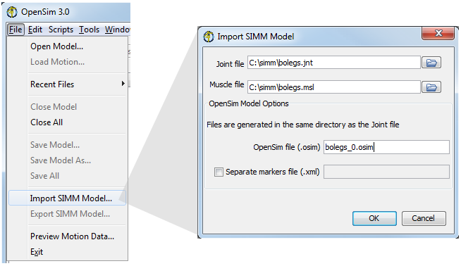
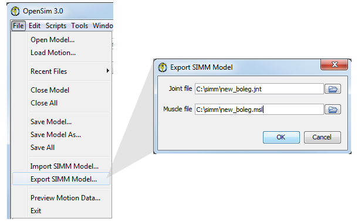

Importing a SIMM Model
Models that were created using Musculographics' SIMM (Software for Interactive Musculoskeletal Modeling) toolkit can be imported into OpenSim.
To import a SIMM model:
|  | ||
|---|---|---|
|
SimmKinematicsEngine models are also supported, provided their base body/segment is called "ground." |
Exporting a SIMM Model
|  |
|---|
|
Compatibility With SIMM
- The SIMM 4.0.1 was used to develop the parsers of jnt and msl files. Accordingly, any new keywords introduced in SIMM afterwards are not supported and should be commented out.
- Joints: The set of joints supported by SIMM and those supported by OpenSim are different. This is handled by converting all joints in a SIMM model into "CustomJoint" in OpenSim even though simpler joint types could be possible (e.g. pin, slider).
- Muscles: The set of muscle types supported by OpenSim and SIMM are distinct, and each system allows users to add custom MuscleModels. Even in cases where the names indicate similarity, the different implementations will lead to different results. Users should NOT expect to get the same simulations or results running in OpenSim and SIMM. On Import from SIMM to OpenSim, SIMM muscles become Thelen2003Muscle muscles. On Export from OpenSim to SIMM, all muscles become MuscleModel 4.
- Only bodies, joints, wrap-objects, and muscles are supported. All other objects will be lost on import/export.
{kind=link}
{kind=link}